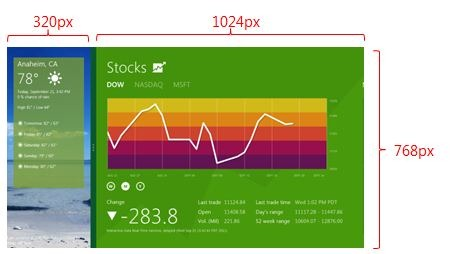

デスクトップは衰退しました
Windowsストアアプリ流の開発計画の立て方
今から前置きです
- 今日は開発の初期計画の話をします。
- 今回、期間が無かったので手抜きです、ごめんなさい＞＜
Windows8が発売されました
・タッチパネルUIのOSの勢力が広がる
→マイクロソフト押されぎみ
→逆転の一手としてWindows8が開発された
・タブレットに対応する新しいUIのアプリ
→Windowsストアアプリ
・特徴
→全画面占有型
→タッチ操作が基本
デスクトップは衰退しました？
・デスクトップアプリの価値は相対的に下がった？
→そんなことは無いと思われるが、話が進まないので前提条件
・では、デスクトップマスコットはどうなるのか？
→画面の一部を間借りする事でユーザーとの距離感を保っている
→そもそも画面占有型アプリではない
→全画面表示のアプリ以外は認めない？
→まさに横暴、ゴースト権の侵害！
Windowsストアアプリでマスコットアプリは作れるか？
・画面占有しないことが絶対条件
・「スナップビュー」という機能がある
→「スナップビュー」前提のマスコットアプリを作ればいい？
320pxの楽園
・スナップビューとは、画面の左右いずれか320pxの領域に、
アプリを縮小表示する機能

・メインアプリ以外に、スナップビュー状態でもう一つ
アプリが表示可能
・従来の意味に近いマスコットアプリを作るなら、
横320pxのフォーマットに合わせて画面を作ればOK
・すげぇ、いけるんじゃね？
→地獄の始まりだ！
前置き終了
‥‥という「思い付き」を元に、とりあえずアプリを作るための
とっかかりの計画をそろえる手法の一つを紹介します。
・マイクロソフトの開発の手引きである
「Windows ストア アプリの計画」を参考書にします。
アジェンダ
1. アプリの長所を決める
2. サポートするユーザーのアクティビティを決める
3. アプリに含める機能を決める
4. アプリで収益を得る方法を決定する
5. アプリの UI を設計する
6. 第一印象を良くする
7. デザインのプロトタイプを作成して検証する
1. アプリの長所を決める（１）
最も重要なのは、アプリの特徴。
何を作りたいのか？
・アイデアを並べてみる
・スナップビューをメイン画面とする
・可愛い女の子に癒されたい
・2次元の嫁が欲しい
・ゴースト辞書をウェブサービス連携したい
・縦書きがいいかもしれない
・女の子は「パスタさん」という名前にしてみよう
1. アプリの長所を決める（２）
・１番の特徴を考える
→アイデアを見ながら、１文でアプリの特徴をまとめる
「窓のすきまからパスタさんの生活を覗きます」
・ゴーストというキーワードはちょっと通じない
・とりあえずは「パスタ」という１ゴーストが動けばいい？
最大の特徴を決めることで、妥協すべき点もはっきりする。
伺かのように切り替えできることは何れ目指したいが、
アプリはリリースすることが最も重要。
2. サポートするユーザーのアクティビティを決める
・目的に沿って、ユーザーが行う一連の操作の流れを定義
・スナップビューにしてもらう（必須）
・パスタさんを可愛がる
・パスタさんの会話を眺める
・パスタさんを触る
必須項目（ここではスナップビューの説明）を漏らさないことが重要！
3. アプリに含める機能を決める（１）
ユーザーの目的を理解し、その目的を助ける方法もわかったら、
次にすることは、それを実現するための機能を探すことです。
～「Windows ストア アプリの計画」より抜粋～
・開発環境を調べ、実現できる機能を決定する
・まずは言語、ネイティブかHTML
・マスコットアプリならHTML/JavaScriptで十分か？
・Windows以外でも動かせる可能性があるし‥‥
3. アプリに含める機能を決める（２）
・操作系や表現で今回重要視した機能
・タッチの検出方法
・縦書き表現
（余談）
Webkitでは縦書きバグってます。
アニメーションさせると表示が死ぬ（涙）
ゆえに、今回IE9限定というものすごい縛りのHTML
4. アプリで収益を得る方法を決定する
・対価は必ず必要
・対価がお金である必要は無い
・なんでもいいから、
モチベーション維持が出来る対価があることを意識する
5. アプリの UI を設計する
・マスコットアプリです
→ぶっちゃけ「かわいらしい立ち絵」大事
・絵心が無い場合、フリーシェルや絵師さんへの発注となる
→今回、「今日のタンブラー」さんが公開していた
フリーシェル候補を使わせていただきました
6. 第一印象を良くする
・「この絵に縦書きの恥ずかしいメッセージが流れまくったら
絶対萌えるだろう！」
→この辺は勢いが大事
・一般的な注意事項
・最低限の操作以外は説明しない
→「ユーザーに発見させる」UIであること
無理にすべての機能を使わせる必要は無い
・ユーザーは常に見てはいない
マスコットアプリはチラ見が基本。
選択肢を出す場合でも必須にならない工夫が必要
まとめ
・計画がそろっていれば、開発のぶれを抑えられる
・７つの項目の考える順はこの通りじゃなくても大丈夫
・「ゴースト」の開発でも使える
・分りやすい資料なので一読おすすめ
あと作る必要があるもの
・まともな栞システム
・ちゃんとしたタッチ反応
・辞書をなるべく多く
→えちょの冒険は始まったばかりだ！
参考文献
・MSDN「Windows ストア アプリの計画」
・MSDN「さまざまな画面への対応」
・パスタのレシピ（開発blog）
・発表資料URL